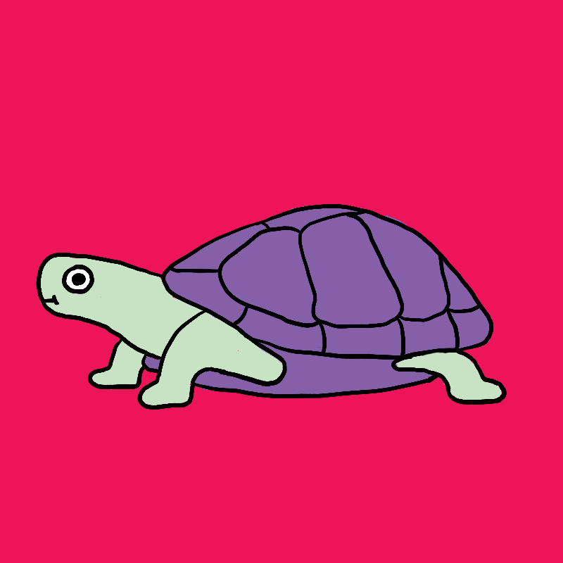

<!DOCTYPE HTML PUBLIC "-//W3C//DTD HTML 4.01 Transitional//EN"
"https://www.w3.org/TR/html4/loose.dtd">
<html>
	<head>
		<title>Наташка-черепашка</title>
        <link rel="shortcut icon" href="https://cherepahi.ru/favicon.ico">
        <link rel="stylesheet" href="style.css"> 
	</head>
<body

<body bgcolor="#5F9EA0"></body>

Моя почта: nataliakamush@gmail.com <br>
Тема курсовой работы: Разработка и составление учебных материалов по учебнику Е. А. Ефимова «Программирование на языке Пролог для задач искусственного интеллекта»


<a href="C:\Тест\HTML\Новая папка\2.html#new1"> НАЖАТЬ</a><br><br>
    Ссылка на следующую страницу <a href="2.html" target="_blank"> файл 2 </a>. 
    </td>

<h2 id="вернуться">Ссылки:</h2>
	<a href="http://isdwiki.rsuh.ru" target="_blank">РГГУ</a> <br><br>
	<a href="http://isdwiki.rsuh.ru" title="Нажми, чтобы посмотреть!">http://isdwiki.rsuh.ru</a>
Ссылка на сайт с ПОДСКАЗКОЙ <br> <!-- title="здесь подсказка ссылки"-->
</a>
<!-- Это изменит цвет ссылки
- link - цвет просто ссылки
- alink - цвет нажатой ссылки
- vlink - цвет посещеной ссылки
- #000080; #FFA500; #FF1493; - это кода цвета ссылок
-->
<body link="#000080" alink="##FFA500" vlink="#FF1493">
Изменение цвета ссылки<br>
	<a href="#конец страницы">Якорь на параграф "конец страницы"</a> <br><br>
	Якорь на другую веб-страницу.<br>
	Бросаем якорь на нужный раздел текста (ВНИМАНИЕ:ссылка может поменяться)
	<a href="C:\Тест\HTML\Новая папка\2.html#new1"> НАЖАТЬ</a><br><br>
    Ссылка на следующую страницу <a href="2.html" target="_blank"> файл 2 </a>. 

<hr> <hr>
<!-- пример списка с арабскими числами -->
Что я люблю:
<ol type="1" >
<li> Программирование </li>
<li> Рисование </li>
<li> Кулинария </li>
<li> Путешествия </li>
<li> Рыбалка </li>
<li> Иностранные языки </li>
<li> Спорт </li>
<li> Животные </li>
<li> Музыка </li>
</ol>
<hr> <hr> 
 
 Если ты тоже любишь что-то из этого, давай дружить!
 
  
<p id="конец страницы">Конец  <br>   страницы!</p> <br> 
<a href="#вернуться">Нажмите сюда,чтобы вернуться к началу страницы</a> <br>


  <!--Атрибут controls добавляет отображение браузерами интерфейса 
   управления аудио плеера — кнопки воспроизведения, паузы, громкости.-->
   
   <audio src="snow.mp3" controls></audio><br>
   
   
<audio  controls>
    <source src="snow.mp3" type="audio/mpeg">
	<source src="snow.ogg" type="audio/ogg">
  <a href="snow.mp3">скачайте</a>
</audio>

</body>
</html>